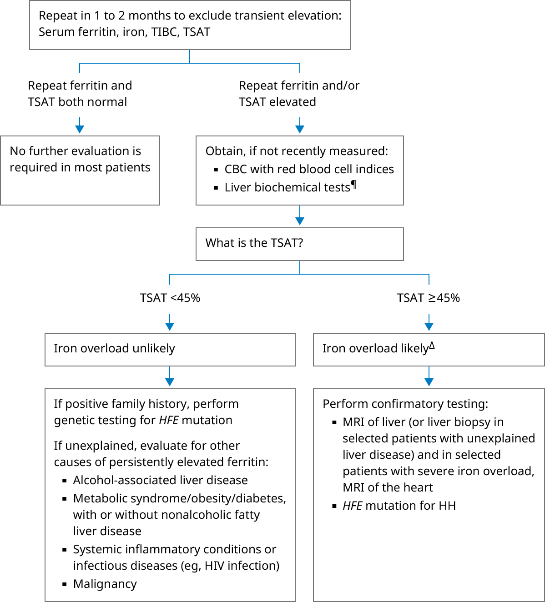

ALT: alanine aminotransferase; AST: aspartate aminotransferase; CBC: complete blood count; HH: hereditary hemochromatosis; HIV: human immunodeficiency virus; MRI: magnetic resonance imaging; RBC: red blood cell; TIBC: total iron binding capacity; TSAT: transferrin saturation, calculated as the ratio of serum iron to TIBC, expressed as a percentage.
* Normal serum ferritin levels range from approximately 40 to 200 ng/mL (40 to 200 mcg/L, 89.9 to 449 picomoles/L). Interpretation of a specific abnormal test result should be based upon the reference range reported with that result. Serum ferritin thresholds for iron overload:¶ Liver biochemical tests include AST, ALT, alkaline phosphatase, bilirubin, and albumin. Iron studies are more likely to be abnormal in patients with liver disease, regardless of total body iron burden.
Δ Potential causes of iron overload:
Alcohol-associated liver disease may be associated with an elevated ferritin and/or a TSAT ≥45% in the absence of iron overload.